【零到全栈】4.4 数据驱动界面
视频来源：Bilibili
配套代码：zero-to-tech-demos/zero-to-tech-4-4
从“操作页面”到“改变数据”
(参考时间: 00:01)
上一节把项目从 Vanilla JavaScript 改造成 React 后，页面已经由组件搭建完成。本节进一步建立一个核心心智模型：界面不是被逐行命令式修改出来的，而是由数据决定的结果。
当某个值变化时，React 会让依赖这个值的界面呈现对应的新状态。开发者不需要手工寻找 DOM 节点、再命令它改文字或隐藏元素。
flowchart LR
D[数据或状态] --> R[React 组件]
R --> U[界面呈现]
A[用户操作] --> D
X[URL 参数] --> D
课程用已有的两个组件说明这一点：
PageHeading接收标题和副标题等外部值，收到什么就显示什么。App保存“当前页面”这个值，例如home或text-lab，并据此决定渲染哪个页面组件。
所以，数据驱动界面要回答的不是“怎样改这个标签”，而是：这个值放在哪里、谁可以改变它、改变后界面如何响应？本节介绍三种常用答案。
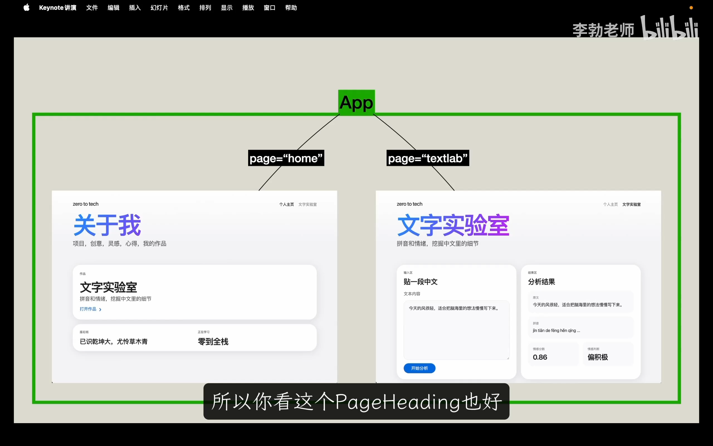
📷 React 页面由组件和当前数据共同决定
在 B 站中打开 (00:03:14)
方案一：把内容数据从组件中抽离
(参考时间: 03:39)
为什么内容不应散落在组件结构中
如果 HomePage.jsx 同时包含页面结构、样式意图和所有文案，修改“关于我”这样的标题也必须在大量 JSX 结构中查找文本。这会让频繁变化的内容与相对稳定的界面结构耦合在一起。
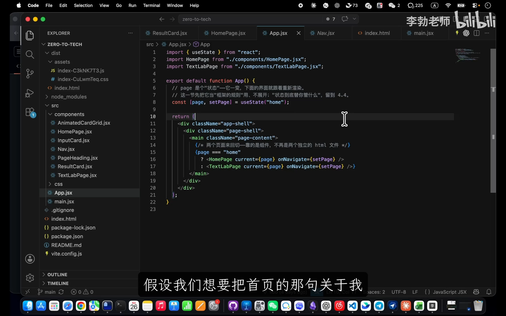
📷 在 HomePage 结构中直接查找“关于我”文案
在 B 站中打开 (00:04:19)
更合适的分工是建立一份内容表，例如 src/data/site.js：
export const site = {
home: {
heroTitle: '关于我',
heroSubtitle: '...'
}
}
该文件是 JavaScript 模块，不是 JSON。两者外形接近，但 JavaScript 对象的最后一项可以保留尾随逗号，且可以导出、组合其他值。
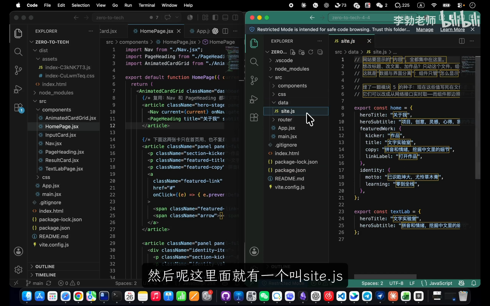
📷 site.js 中集中定义网站标题等内容
在 B 站中打开 (00:09:13)
组件只读取字段并负责排版：
import { site } from '../data/site.js'
export default function HomePage() {
return <PageHeading title={site.home.heroTitle} />
}
这样，HomePage、App 和 PageHeading 都无需因“关于我”改成“你好世界”而修改；保存 site.js 后，开发服务器会立即呈现新值。
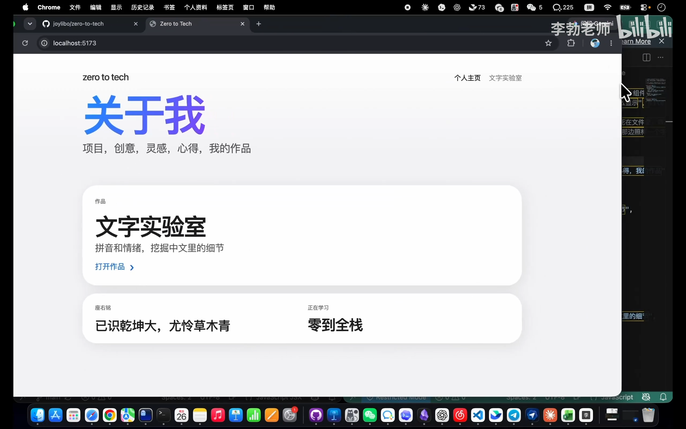
📷 编辑 site.js 后页面标题即时更新
在 B 站中打开 (00:09:54)
这种分离带来的收益
- 内容集中管理：改文案、补作品卡片等操作集中在内容表中完成。
- 界面更稳定：组件专注布局、样式和结构，不关心具体文案。
- 便于国际化：准备中文、英文或法语内容表，再依据语言选择读取来源，无需复制页面结构。
- 为后端数据做准备：当前数据写在本地文件，之后可以替换为 API 返回的数据，组件的呈现职责不变。
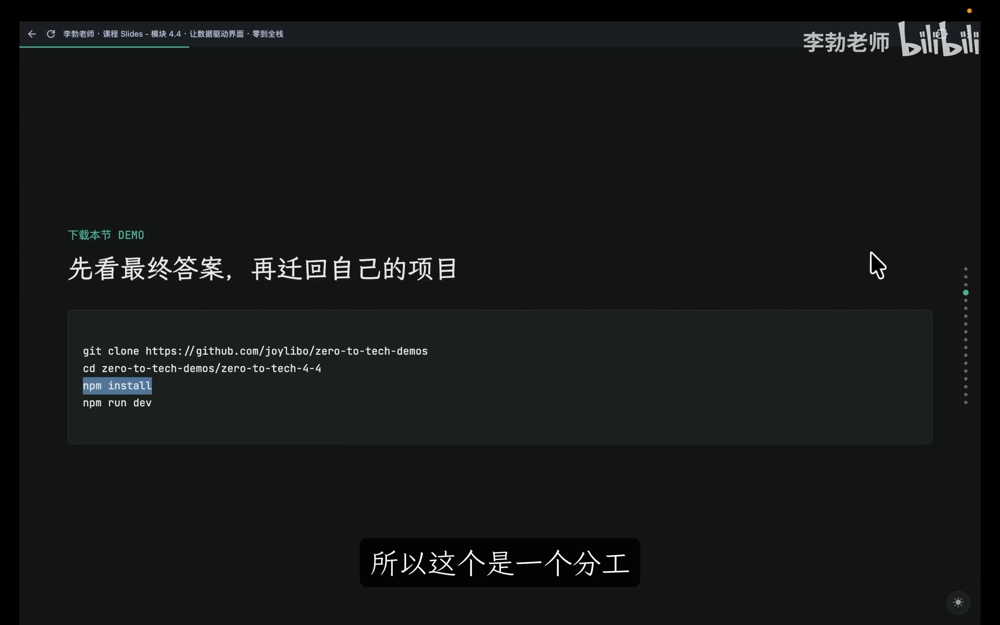
📷 内容表与组件各自负责的边界
在 B 站中打开 (00:10:26)
方案二：用 State 表示会变化的界面数据
(参考时间: 12:12)
内容表中的值由开发者改文件才会变化，但用户交互也会不断产生新数据。例如在文字实验室输入文本后，页面要实时显示“已输入 N 字”。这类会变化、变化后需重新渲染的值，在 React 中称为 state（状态）。
sequenceDiagram
participant User as 用户
participant Input as 输入框
participant State as 组件 State
participant UI as 字数显示
User->>Input: 输入或删除文字
Input->>State: 更新 text
State->>UI: 重新计算并渲染字数
一个典型组件使用 useState 保存输入内容：
import { useState } from 'react'
function InputCard() {
const [text, setText] = useState('')
return (
<>
<textarea value={text} onChange={(e) => setText(e.target.value)} />
<p>已输入 {text.length} 字</p>
</>
)
}
text 是当前值，setText 是更新它的唯一入口。用户打字触发 onChange，状态更新，React 随即重新执行组件并让字数显示跟随变化。
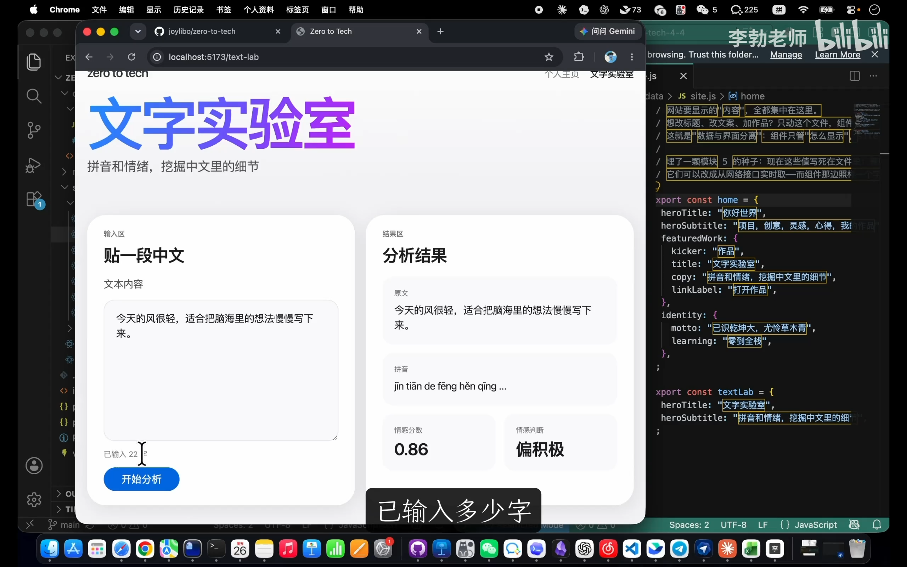
📷 文字实验室中输入内容，字数同步变化
在 B 站中打开 (00:13:42)
State 的边界：刷新后会丢失
state 只存在于当前页面运行期间。刷新浏览器、关闭页面或直接把地址发给别人时，内存中的状态不会自动保留。
这也是上一节用 App 内部 state 管理页面切换的局限：进入文字实验室后刷新，页面又回到默认首页；复制地址给别人，也无法让对方直接进入当前页面。
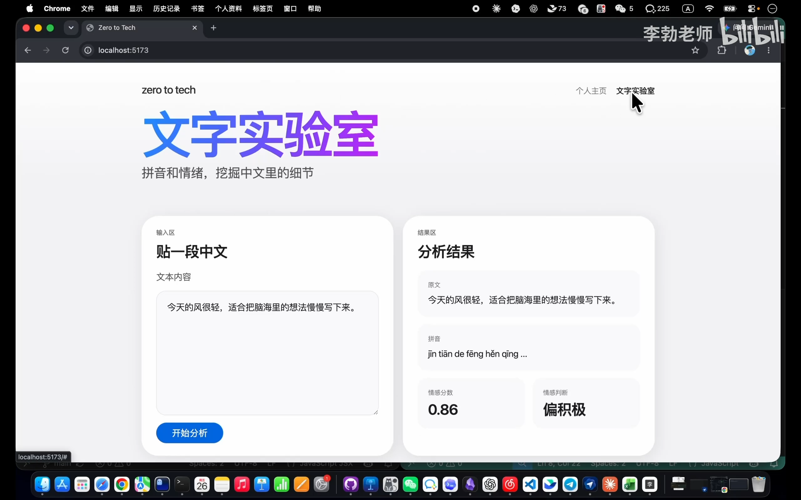
📷 仅用 state 管理页面时，刷新后回到默认首页
在 B 站中打开 (00:17:20)
因此，适合 state 的是输入内容、弹窗开关、当前选中项等短期交互值；需要刷新后保留、可分享、可前进后退的页面位置，则应交给 URL。
方案三：把路由状态写入 URL
(参考时间: 18:17)
路由也是数据驱动界面：只不过“当前显示哪一页”这个数据不再只放在 App 的 state 中，而是编码在浏览器 URL 的路径里。
flowchart TD
N[用户点击导航] --> W[router 写入 URL 路径]
W --> H[history 产生历史记录]
H --> R[App 读取当前路径]
R --> P{路径是什么?}
P -->|/| Home[渲染 HomePage]
P -->|/text-lab| Lab[渲染 TextLabPage]
示例项目在 src/router/useRoute.js 中实现了一个轻量路由工具。它负责读取当前地址，并在点击导航时更新 URL。App.jsx 根据该路径选择页面。
// 路由值的含义示例
'/' // 个人主页
'/text-lab' // 文字实验室
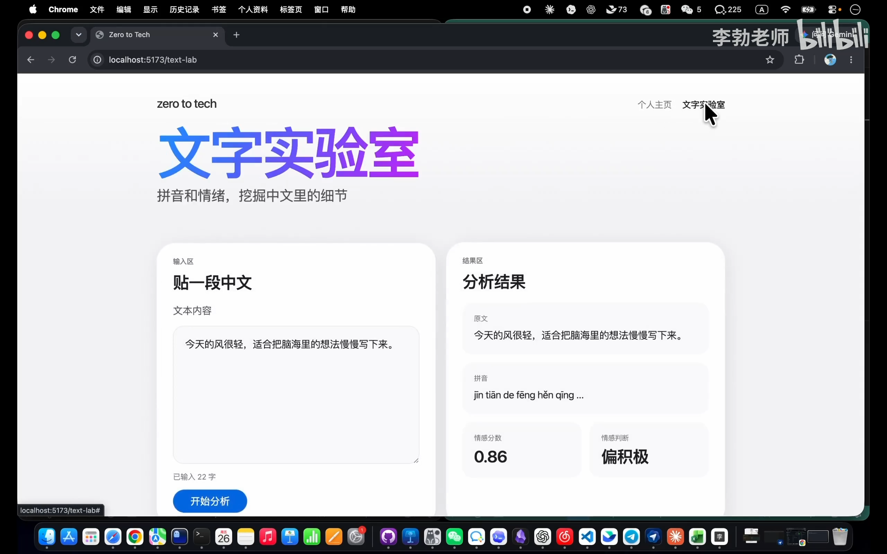
📷 切换导航时地址栏路径同步变化
在 B 站中打开 (00:18:52)
把路由放进 URL 后获得三个关键行为：
- 在
/text-lab刷新仍停留在文字实验室。 - 浏览器前进、后退可以恢复之前的页面位置。
- 把当前地址发给其他人，对方打开的是同一个页面。
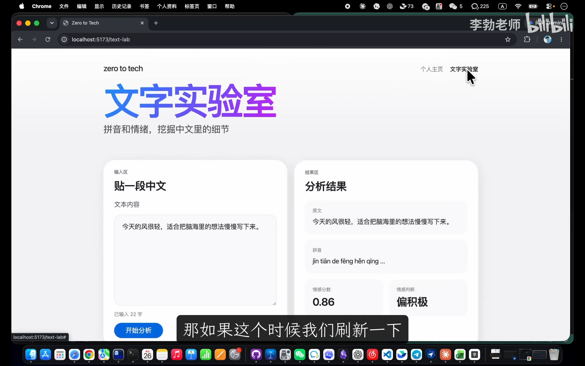
📷 文字实验室路径刷新后仍能恢复页面
在 B 站中打开 (00:19:00)
课程中的 useRoute.js 是为了理解原理而手写的最小实现。真实的成熟 React 项目通常直接使用 React Router；后续的 Next.js 也提供了内建的路由方案。
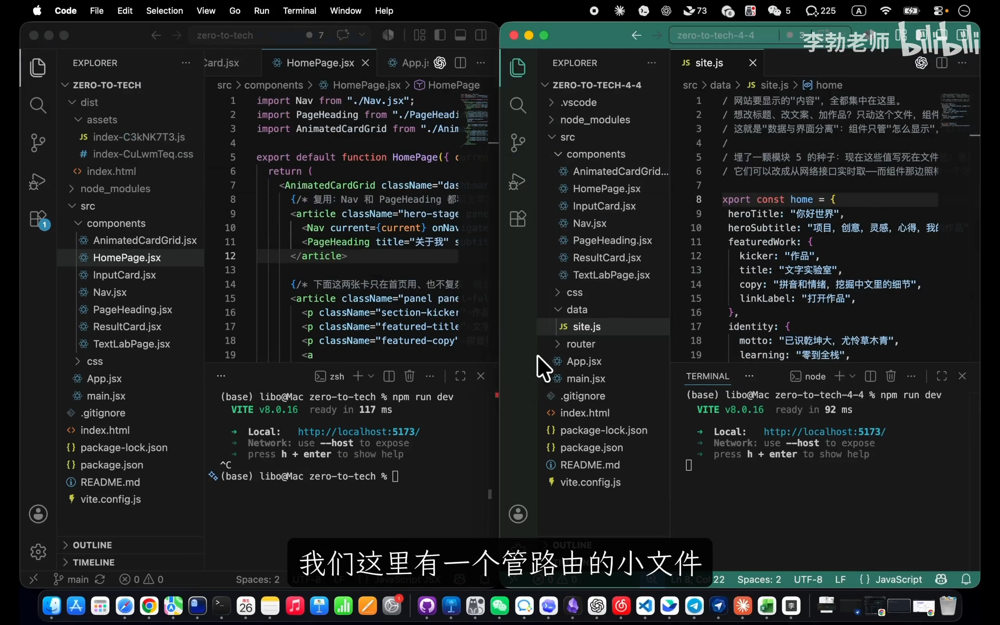
📷 router 文件负责在导航时修改 URL
在 B 站中打开 (00:20:00)
将 4.3 项目迁移到本节结构
(参考时间: 22:18)
本节 demo 是 4.3 项目的演进版。迁移时不必重建项目，只需把内容表和小路由加入现有目录，并用 demo 中的版本覆盖相关页面组件。
新增文件
src/
├─ data/
│ └─ site.js
└─ router/
└─ useRoute.js
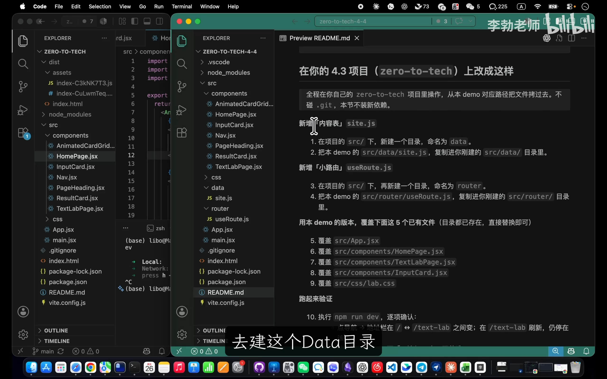
📷 新建 data 目录并复制 site.js
在 B 站中打开 (00:23:05)
覆盖的已有文件
src/App.jsx
src/components/HomePage.jsx
src/components/TextLabPage.jsx
src/components/InputCard.jsx
src/css/lab.css
迁移完成后启动开发服务器：
npm run dev
按以下顺序验收：
- 点击导航，地址栏在
/与/text-lab之间切换；刷新/text-lab后仍在该页。 - 在输入框键入内容，“已输入 N 字”会立即更新。
- 改
src/data/site.js的heroTitle并保存，页面大标题即时改变。
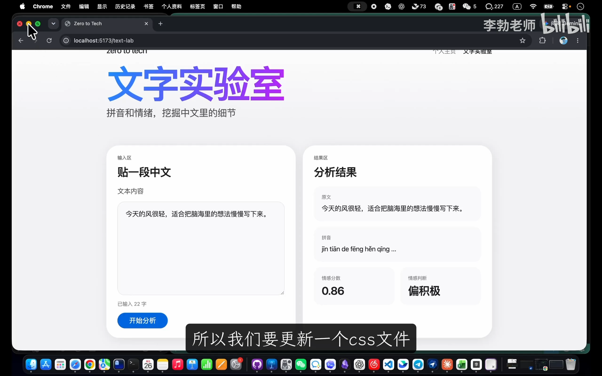
📷 覆盖页面组件与样式文件后的项目结构
在 B 站中打开 (00:24:37)
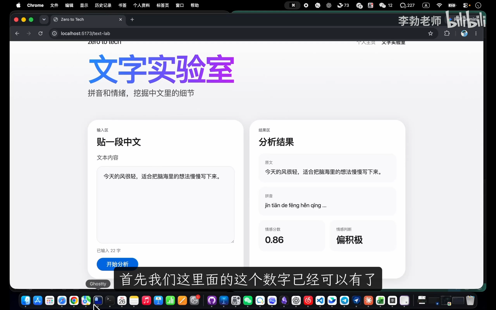
📷 迁移完成后验证字数、路由和内容表更新
在 B 站中打开 (00:27:49)
Vite + React 项目的部署流程
(参考时间: 28:55)
从 Vanilla 项目切换到 Vite + React 后，服务器不能再把源码目录直接交给 Nginx。浏览器不认识 JSX 和框架源码，必须先在服务器上构建。
flowchart LR
L[本地修改源码] --> G[git push]
G --> S[服务器 git pull]
S --> I[npm install
依赖变更时执行]
I --> B[npm run build]
B --> D[dist/ 静态产物]
D --> N[Nginx root 指向 dist/]
N --> U[用户浏览器]
首次部署或依赖变更时
- 本地提交并推送源码。
- 服务器进入项目目录后拉取代码。
- 安装 Node.js，并执行
npm install根据package.json安装依赖。 - 执行
npm run build，生成dist/。 - 让 Nginx 的
root指向项目的dist/目录。
npm install
npm run build
sudo nginx -t
sudo systemctl reload nginx
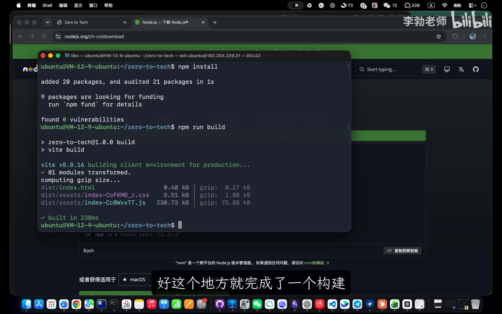
📷 服务器执行 npm run build 后生成 dist 目录
在 B 站中打开 (00:33:32)
dist/ 是构建产物，通常被 .gitignore 排除：Git 仓库提交的是源码，服务器拉取源码后自行构建。后续如果只改文案、package.json 没变，可以跳过 npm install，但仍要重新执行 npm run build。
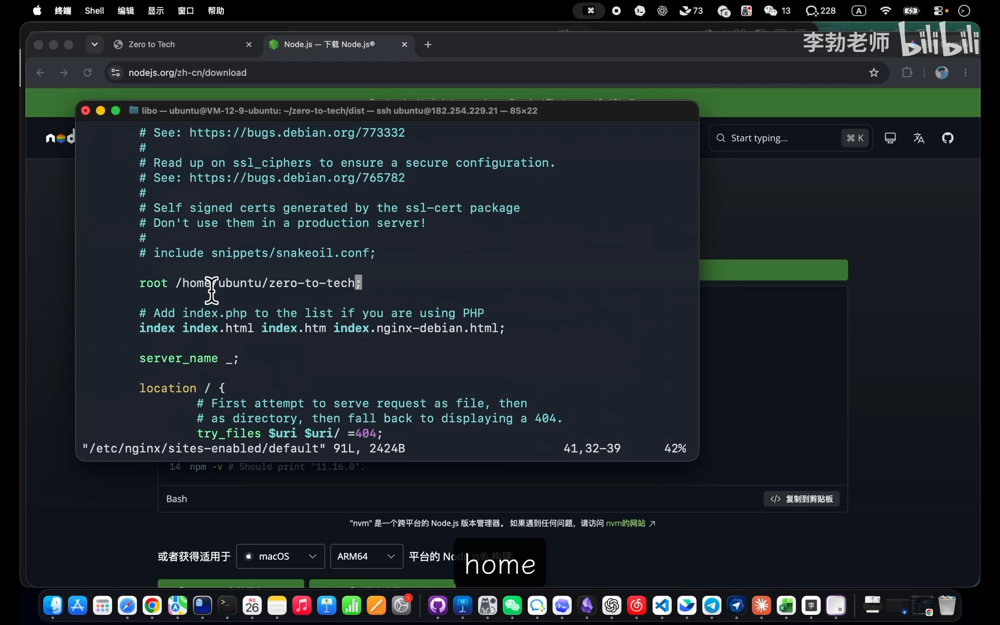
📷 将 Nginx 的 root 从源码目录改为 dist 目录
在 B 站中打开 (00:34:41)
单页应用部署的遗留问题
本节通过 URL 路由实现了 /text-lab，本地 Vite 开发服务器刷新该路径没有问题；但直接使用静态 Nginx 部署时，刷新深层路径可能收到 404。这是单页应用（SPA）常见的服务器回退配置问题。
课程暂不在本节展开，而是在下一节引出 Next.js。核心结论是：开发环境能处理前端路由，不代表生产服务器已经知道如何把任意路径回退到应用入口。
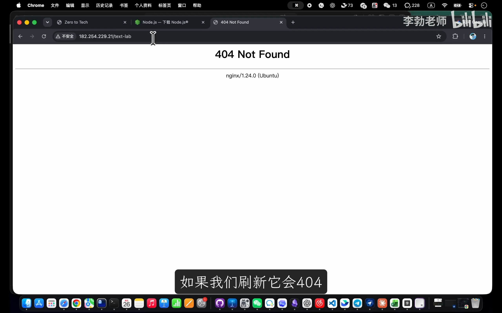
📷 线上刷新 text-lab 路径暴露 SPA 路由部署问题
在 B 站中打开 (00:38:08)
本节回顾
(参考时间: 39:48)
数据驱动界面有三种主要落点：
| 数据位置 | 适用场景 | 代表例子 |
|---|---|---|
| 内容表 | 稳定、集中维护的展示内容 | src/data/site.js |
| 组件 state | 用户交互期间不断变化的短期值 | 输入框文本、字数 |
| URL | 需要刷新保留、可分享、支持前进后退的页面状态 | /text-lab 路由 |
对于 React 项目部署，服务器的职责也随之变化：不直接服务源码目录，而是安装依赖、构建 dist/，再由 Nginx 服务构建产物。
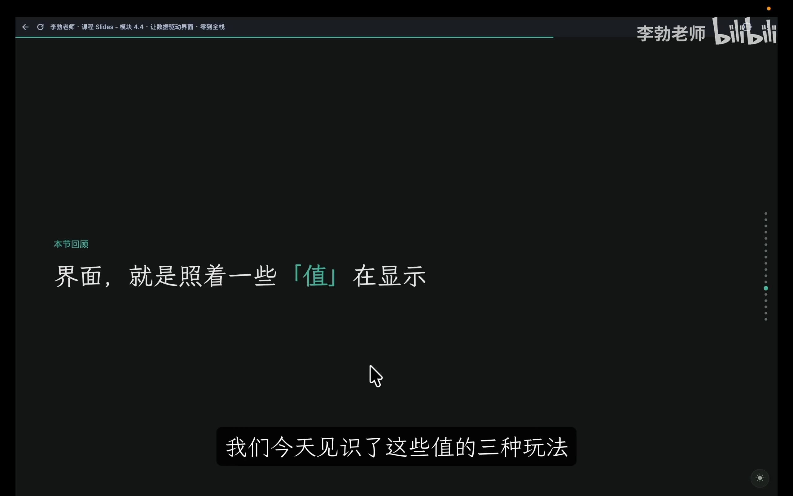
📷 三种数据位置与部署流程总结
在 B 站中打开 (00:40:00)